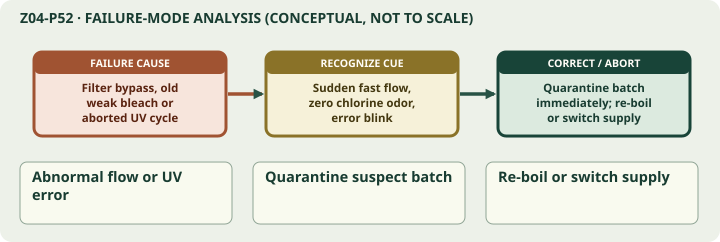

Z04-P52 · Water · New manuscript
Recognize filter bypass, expired bleach and incomplete UV cycles
Catch silent treatment failures before anyone drinks an inadequately treated batch of water.
When it applies · Field and household operation of portable filters, chemical disinfectants and battery-powered UV purifiers.
Equipment · Working backup treatment method, product labels, watch/timer and batch tracking log.

Actions
- Treat sudden unusually fast filter flow, cracked housings, missing O-rings or prior freezing of a wet cartridge as signs of mechanical bypass.[W28, W04]
- Reject unlabeled, expired or contaminated reagents and any batch that did not meet its official time and dose requirements. Odor cannot verify microbial safety.[W05, W12]
- Treat blinking error indicators, low-battery shutdowns, turbid water or oversized bottles as incomplete UV cycles that leave microbes active.[W11]
Failure recognition · Drinking a batch after a UV wand flickered out mid-cycle or after a frozen squeeze filter suddenly flowed twice as fast as normal.[W11, W28]
Verify · Confirm each treatment batch met its full mechanical integrity, dose/odor or rated UV cycle criterion before releasing it to the clean side.[W04, W11, W12, ED]
Stop or change course · Whenever any treatment device shows bypass, power failure or uncertain dose, quarantine the batch and re-treat by boiling (if chemically safe) or switch to another supply.[W02, W11, W28]
Evidence and editorial notes
- W02 · CDC · How to Make Water Safe in an Emergency (2024-09-19)
- Section: Boil > Steps for boiling water · Conditions: Microbiologically suspect water with acceptable chemical source; portable heat and safe vessel
Support: Clarify cloudy water first. Rolling boil for one minute; above 6,500 feet for three minutes. Cool and cover in sanitized containers.
Limitations: Does not remove dissolved metals, nitrates, fuel, or cyanotoxins. · Conflicting evidence: Older Track B B009 omitted the 6,500 ft threshold; CDC threshold governs.
Editorial note: Require explicit timer verification after rolling boil starts. · Specialist reviewer: Drinking-water safety and public health
Primary source · checked 2026-11-24 - W04 · CDC · Water Treatment Options When Hiking, Camping, or Traveling (current web edition)
- Section: Water treatment methods > Filter and disinfect · Conditions: Untreated backcountry water; suitable devices and directions
Support: Filter capability varies. Filtering then disinfecting addresses gaps left by typical portable filters. Follow both manufacturers' directions.
Limitations: Effectiveness depends on pore rating, cartridge integrity, and manufacturer-verified test standards. · Conflicting evidence: None; consumer claims outside NSF/EPA standards are excluded.
Editorial note: Used to require multi-barrier pairing rather than relying on one filter alone. · Specialist reviewer: Drinking-water treatment specialist
Primary source · checked 2026-11-24 - W05 · CDC · How to Make Water Safe in an Emergency (2024-09-19)
- Section: Disinfect; Using light · Conditions: Matched product, concentration, dose, contact time and source condition
Support: Chemical disinfection is less dependable against some parasites. UV needs clear water and a correctly used device.
Limitations: Cold temperature and organic turbidity reduce chemical efficacy and UV penetration. · Conflicting evidence: None; exact manufacturer label governs dose and wait time.
Editorial note: Prohibits improvised chemical dosing when labels are absent. · Specialist reviewer: Drinking-water treatment specialist
Primary source · checked 2026-11-24 - W11 · CDC · Water Treatment Options When Hiking, Camping, or Traveling (current web edition)
- Section: Using light · Conditions: Portable UV disinfection device on a supported batch size of clear water
Support: Cloudiness interferes with UV. Use the device's stated volume, mixing and cycle instructions.
Limitations: Battery failure, cold battery voltage drop, or container UV opacity can silently defeat treatment. · Conflicting evidence: None; requires pre-clarification for turbid sources.
Editorial note: Requires verifying clarity, rated volume, and completed cycle indicator. · Specialist reviewer: Drinking-water treatment and equipment safety
Primary source · checked 2026-11-24 - W12 · US EPA · Emergency Disinfection of Drinking Water (current web edition)
- Section: Emergency Disinfection of Drinking Water > Bleach · Conditions: Emergency water when boiling is unavailable; unscented 5%–9% liquid household chlorine bleach
Support: Use one complete current public health protocol for the exact product and water conditions. The EPA instructions specify unscented bleach concentration tables and a minimum contact time; local directions take precedence.
Limitations: Ineffective against Cryptosporidium and chemical/fuel contaminants; bleach degrades with age and heat. · Conflicting evidence: EPA and CDC both note 8 drops (about 1/8 tsp) per gallon for clear water with 5%–9% bleach; exact concentration on current bottle governs.
Editorial note: Requires reading the bottle label rather than memorizing a single drop count for unknown concentrations. · Specialist reviewer: Drinking-water safety and public health
Primary source · checked 2026-11-24 - W28 · Sawyer · Water Filtration FAQs (Current manufacturer FAQ)
- Section: Water filtration FAQ > filter freezing · Conditions: Sawyer wet hollow-fiber filters; other models follow their exact manufacturer instructions
Support: Freezing can damage a wetted filter. Sawyer advises replacing a filter suspected of freezing; visual inspection cannot establish its integrity.
Limitations: Do not extrapolate replacement or integrity-testing instructions to other products without their manuals. · Conflicting evidence: None; critical cold-weather filter failure mechanism.
Editorial note: Drives cold-weather filter protection and failure-recognition cards. · Specialist reviewer: Drinking-water treatment and cold-weather operations
Primary source · checked 2026-11-24
Source lineage · CDC water treatment limits; new manuscript · Classification · New manuscript.